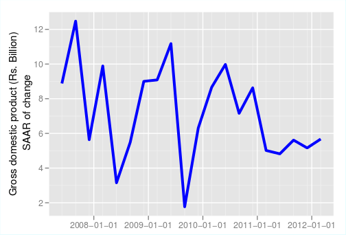
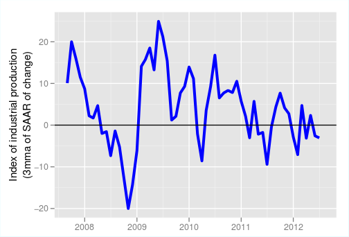
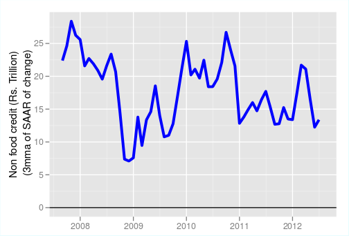
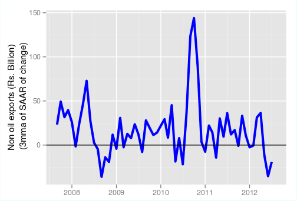

Why reforms aren't lifting growth
Financial Express, 28th December 2012
Investment is unlikely to take off as highly leveraged firms and stressed banks can't take on more riskRecent initiatives by the government-the postponement of GAAR, FDI in multi-brand retail, and the proposal to set up a Cabinet Committee on Investment (CCI), earlier called the National Investment Board, have not started showing up in pushing growth up as yet. This is not surprising because deeper problems remain. Power projects still face problems in obtaining coal as raw material and collecting money for power distributed and sold to states. Highly leveraged companies and banks with stretched balance sheets are in no position to take further risk. Investment is likely to remain low till policy changes to solve deeper problems and companies and banks have time to clean up their balance sheets. The cautious optimism that came with policy reforms has not yet started giving signals of a growth upswing.
Recent data on output, exports and credit do not show an improvement. Under these circumstances, GDP growth in 2013-14 could well hover around 5-5.5%. The government seems to be banking on fast track clearances to stalled projects. This is unlikely to be have a large effect in the short run. Few companies are in a position to start investing in new projects today. Few banks are in a position to lend to them. Perhaps these are among the reasons why data is not showing a pick-up so far.
Let us look at the most recent data. Monthly and quarterly data needs to be seasonally adjusted before it can be used. Otherwise, seasonality in the data can make month-on-month comparisons meaningless. But once this is done, it offers more insights into the most recent trends in the economy than the yearly growth rates do. Instead of being an average of the last 12 months, the data can reflect the month-on-month moving average. This indicates what year-on-year data would do with a lead of about 5 months. We look at a few leading and coincident indicators of the economy using seasonally-adjusted data below. This data is available at here, from where it can be downloaded. In most cases, the data shows the 3-month moving average of the month-on-month seasonally-adjusted variable.
    Figure 1 shows the seasonally-adjusted growth rate of GDP. This number has now settled just about 5% and is not showing up and down swings of the kind that were happening till 2010.
Similarly, figure 2 shows the 3-month moving average of the seasonally-adjusted IIP growth. Again, once growth declined after 2010, it has not swung back. The monthly volatility has dampened and growth is fluctuating around zero.
Figure 3 shows the growth in non-food credit. This is measured in nominal terms, unlike production data indices, which are measured in real terms. Again the month-on-month seasonally-adjusted rate has slowed down, and on average the growth has been roughly 15%, which is just a little higher than the inflation rate. Credit growth has thus slowed down to the growth rate of roughly to about 5%. Credit growth usually rises before an upswing in production. The slow growth shows that the credit has not started expanding yet.
Figure 4 shows the increase in the rupee value of non-oil exports growth. We focus on non-oil exports since oil exports have more to do with the domestic fuel pricing policy induced refining in India, rather than an indication of business cycle conditions. Again, the month-on-month growth data is dismal. While export growth depends on the conditions in the rest of the world, it is sometimes a leading indicator for output in the Indian economy. When exports start rising, other production rises in response.
Figure 5 shows the growth in the rupee value of non-oil imports. This is often a coincident indicator as higher production requires higher import of raw materials, and India is a large importer of raw materials. More investment requires more imports of machinery. But, as we see, import growth shows no upswing.
To summarise, the variables that are in general seen to show an upswing when the economy shows an upswing, are not showing improvement so far. This does not bode well for the economy. Other evidence, which shows that investment growth has slowed down this year, from more than 12% to around 5%, has been a cause for concern. Returns from projects in which companies have invested appear to be low, or are zero, as companies grapple with missing infrastructure, stopping of raw material supplies due to delay in environmental clearances and concerns over forest peoples rights. These companies are highly leveraged, have capital trapped in large projects that have been stalled due to government incompetence or corruption issues. In many cases, these companies have had to go in for debt restructuring of their bank loans. These companies are not particularly in a mood to invest. Even if interest rates are lowered, there is likely to be nothing more than a marginal increase in investment, if at all.
Will the CCI, that will push to getting stalled projects started again, be able to bring back high GDP growth. First, there are questions about the power and the legal framework in which the CCI will function. The committee might not have had the required powers to work had it been under the ministry of finance. Other ministries had objected to it giving clearances to projects that the relevant ministries had not given. It has, therefore, been brought under the Cabinet, which can play the role of coordination and apply time lines for all clearances. But it still remains to be seen how well this will work and whether projects once cleared do not get embroiled into controversy and get stuck again in court battles.
Further, will the committee be able to push all stalled projects? First, a large number of projects may have been stalled as they seem profitable under favourable conditions when the world was looking good, the economy was in a boom and credit was growing at over 30% with real interest rates zero or negative. Even if clearances are given, these projects may not be attractive today. Second, while a large number of projects may have originally got stuck due to, say, a land acquisition problem, but during the delay, the balance sheet of the company weakened as it was unable to get the returns it expected and make the payments it needed to, including interest payments to banks. Infrastructure companies, for example, would be far more cautious today about investing money in a stalled project. The bureaucracy, regardless of whether it is in the ministry of finance, or in the environment and forest ministry, will be far more cautious in giving clearances today than last year. It seems that it will be some time before a see a pick up in investment and economic activity.
Back up to Ila Patnaik's media page
Back up to Ila Patnaik's home page